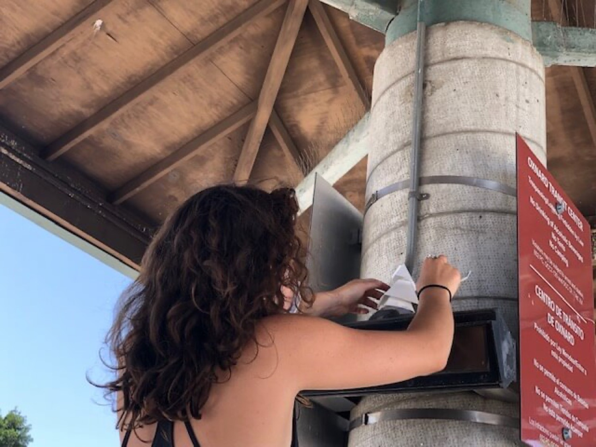
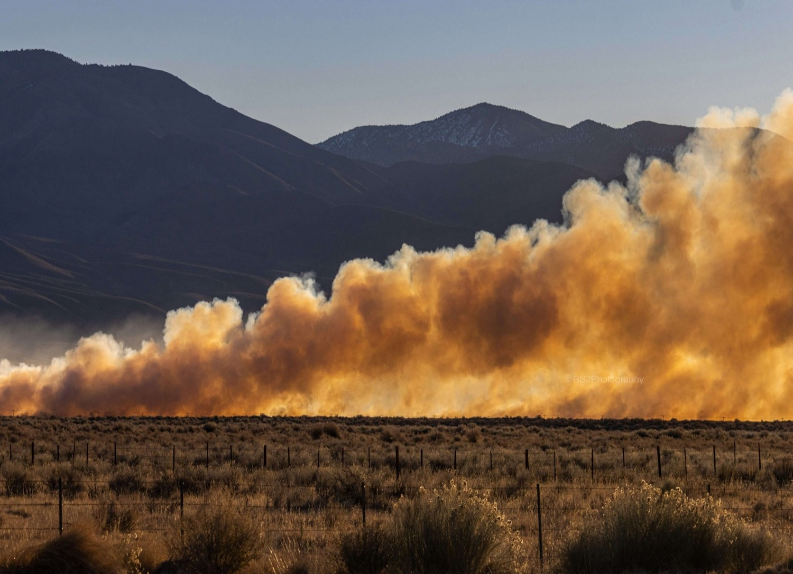
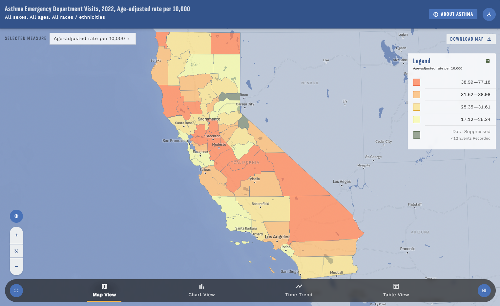
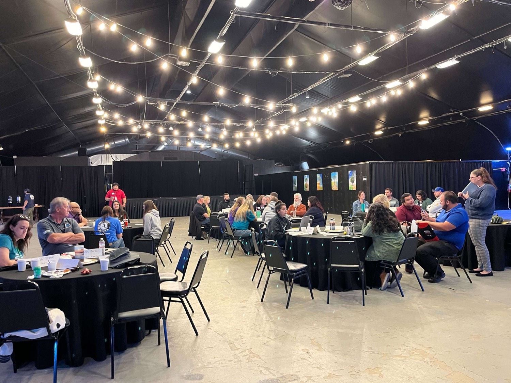
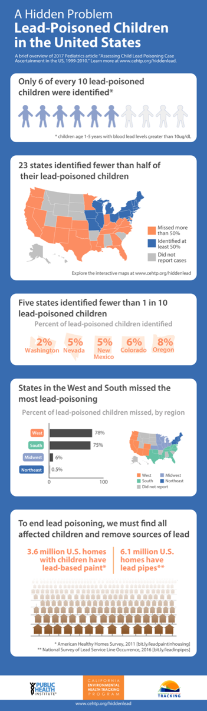

Project
Achieving Resilient Communities (ARC)
Helping rural communities build climate resilience through local partnerships and planning.
Informing action for healthier communities
Public health, climate, and environmental data, turned into tools and partnerships communities can act on.

Explore the data
Interactive explorers, maps, and datasets covering air, water, climate, pesticides, and health across California.
Take action
The partnerships, trainings, and tools that turn data into change on the ground — built alongside the people most affected.

Helping rural communities build climate resilience through local partnerships and planning.


A high-resolution dataset of traffic volumes across California for exposure research.


New evidence linking traffic-related air pollution to childhood asthma in California.

We build data, tools, research, and networks alongside the communities most affected by environmental hazards. Select a partner on the map to see the work we do together.
Peer-reviewed research, reports, and commentary that turn our data into evidence for action.
Want to know how to build climate resilience? Learn how to use the latest data to track air quality? Partner on a grant to build new tools for your community? We do all this at Tracking California.